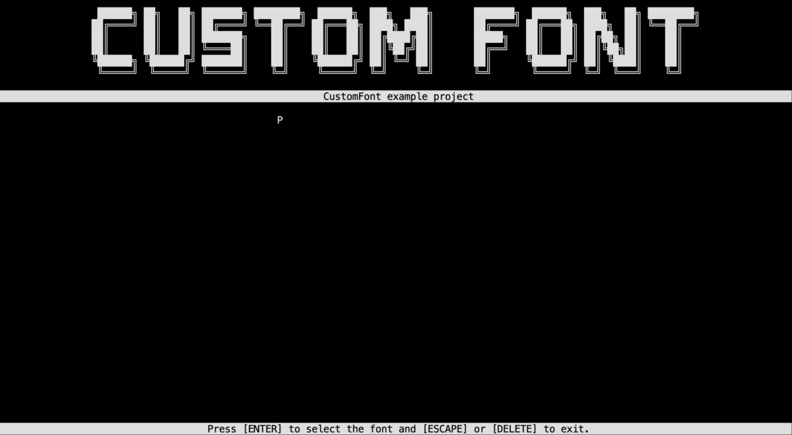

Custom Font
| Author | Size | Library version | Source files |
|---|---|---|---|
| MorganKryze | small | latest | link |
Introduction
The CustomFont example demonstrates the use of the library to create a custom font that can be used in a Console application.

Features covered
The project covers the following features:
- General: Create and use custom fonts
- PassiveElements:
Title,Header&Footer - InteractiveElements:
ScrollingMenu,Dialog
Build & Run
Install
To clone the project, run the following command:
git clone https://github.com/MorganKryze/ConsoleAppVisuals.git
Or alternatively, download the project as a zip file from the repository.
Setup
Versions
The project is built with the latest version of the library.
The project is built with the net9.0 and net8.0 target framework. Some changes should be applied to the project to make it compatible with the net6.0 or net7.0 target frameworks.
Check your local .NET SDK version by running the following command:
dotnet --version
Build
To build the project, open a terminal in the project directory (./ConsoleAppVisuals).
Then move to the working directory:
cd examples/CustomFont
Finally, run the following command:
dotnet build
Run
If the build is successful, run the following command:
dotnet run
The application should start and display the same result as in the demonstration video.
Have a question, give a feedback or found a bug? Feel free to open an issue or start a discussion on the GitHub repository.